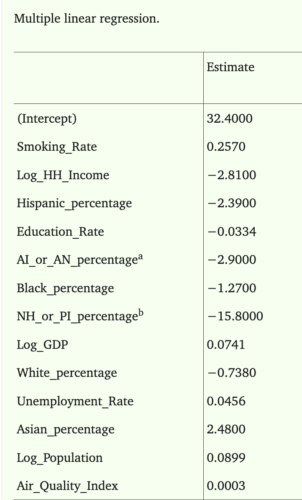
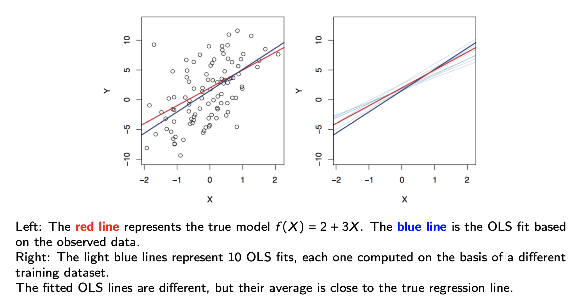
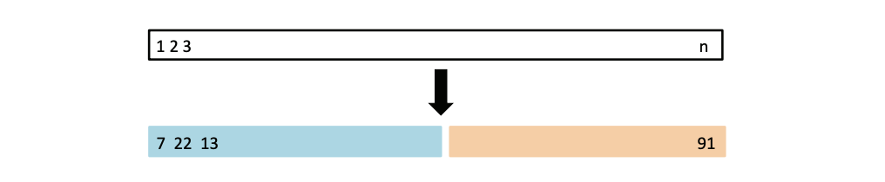
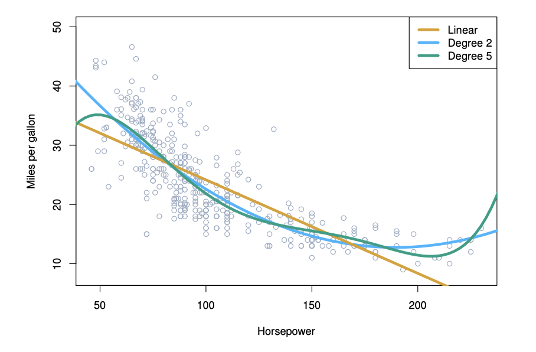
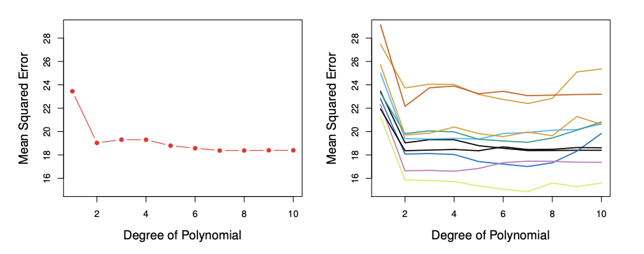
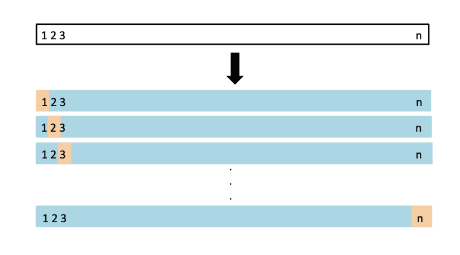
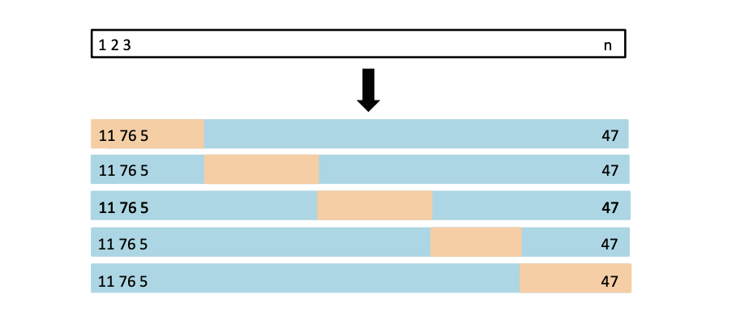
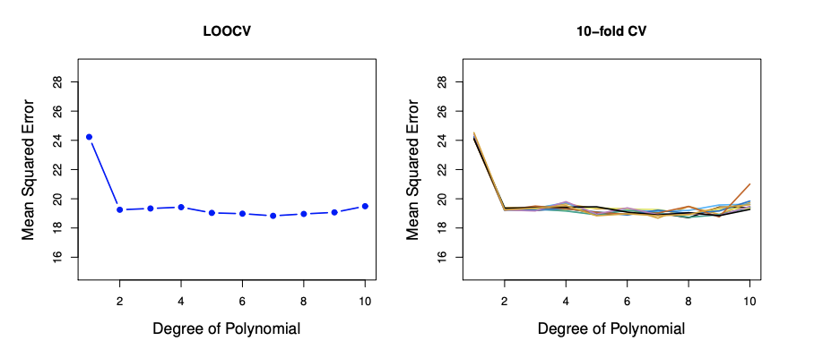
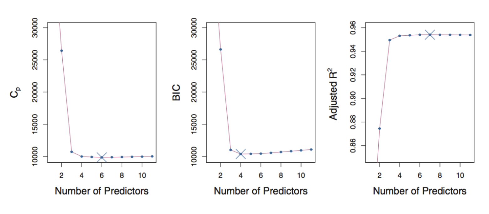
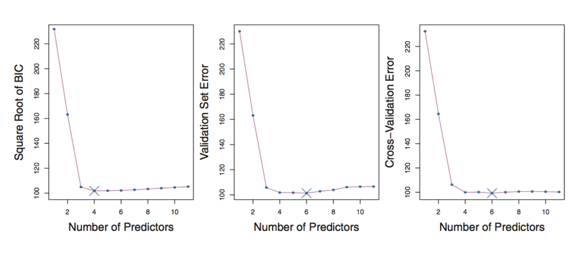

Linear Regression, and Model Assessment/Selection
Week 2
Review from Last Week
Machine learning is the science of learning patterns from data.
We introduced three types of machine learning problems:
- Supervised Learning
- Unsupervised Learning
- Reinforcement Learning
The main focus of this course is supervised learning, where we are given
- Training Set \({(x_1, y_1), ..., (x_n, y_n)}\) consisting of \(n\) samples of
- features \(x_1, ..., x_n \in X\) and corresponding
- outcome \(y_1, ..., y_n \in Y\)
and the goal is to to estimate (or learn) the function \(f: X \rightarrow Y\) based on \(D^{train}\).
Review from Last Week
We discussed two approaches of estimating \(f\) based on \(D^{train}\):
- Parametric method (assume a distribution)
- Example: assuming a linear model
- Non-parametric method (data-driven)
- Example: k-nearest neighbours
When choosing a model, \(\hat{f}\), we need to keep in mind the bias-variance tradeoff
- the balance between a model being too simple (high bias) and too complex (high variance)
Review from Last Week
When deciding on the best model, we can use a metric such as the test MSE (regression problems) or the test error rate (classification problems)
- it is important to evaluate model performance using the test data, since the training MSE (or error rate) will always prefer a more complex model
In summary, different \(\hat{f}\) are simply different algorithms/methods/predictors
- we will spend this course going over many different ways to estimate \(f\)
- there is no one best method
Learning Outcomes for This Week
By the end of this week, you will be able to…
- Explain and apply ordinary least squares (OLS) for fitting a linear regression model and interpret the resulting coefficient estimates.
- Explain the need for model assessment and selection, including the distinction between training error and expected test error.
- Apply validation-set, leave-one-out, and \(k\)-fold cross-validation to estimate test error and compare competing models.
- Compare common model-selection criteria, including Mallows’ \(C_p\), adjusted \(R^2\), AIC, and BIC.
- Describe and compare subset-selection methods, including best subset, forward stepwise, and backward stepwise selection, and discuss their computational trade-offs.
Linear Regression: A Review
Motivating Example
Chronic obstructive pulmonary disease (COPD) is a long-term lung condition that makes it progressively harder to breathe.
Despite the decreasing rates in cigarette smoking, COPD continues to be a problem.
We wish to:
- better understand the features that are associated with COPD, and
- predict COPD in new patients.
Since we care about the interpretability of the model, a natural choice is a linear model to estimate \(f\)!
Kamis, A., Gadia, N., Luo, Z., Ng, S. X., & Thumbar, M. (2024). Obtaining the Most Accurate, Explainable Model for Predicting Chronic Obstructive Pulmonary Disease: Triangulation of Multiple Linear Regression and Machine Learning Methods. JMIR AI, 3, e58455.
Linear Regression
Although simple, and may seem a bit dull compared to other more sophisticated techniques, linear regression remains to be a very useful and widely used statistical learning method.
It is the foundation of a lot of new approaches as well.
Linear Regression
Let \(Y \in \mathbb{R}\) be the outcome and \(X \in \mathbb{R}^p\) be the (random) vector of \(p\) features.
The linear model assumes:
\[ \begin{aligned} Y &= f(X) + \epsilon \\ &= \beta_0 + \beta_1X_1 + ... + \beta_pX_p + \epsilon \end{aligned} \] where
- \(\beta_0, \beta_1, ..., \beta_p\) are unknown constants
- \(\beta_0\) is called the intercept
- \(\beta_j\), for \(1 \leq j \leq p\), are the coefficients of the \(p\) features
- \(\epsilon\) is the error term satisfying \(\mathbb{E}[\epsilon]=0\)
Linear Predictor under the Linear Regression Model
If we can estimate the unknown coefficients \(\beta_0, \ldots, \beta_p\), then we can use the fitted model to predict the response for a new observation \(\mathbf{x}^* = (x_1^*, \ldots, x_p^*)\):
\[
\hat{f}(\mathbf{x}^*)
= \hat{\beta}_0
+ \hat{\beta}_1 x_1^*
+ \cdots
+ \hat{\beta}_p x_p^*.
\]
Question: How do we estimate \(\hat{\beta}_0, \ldots, \hat{\beta}_p\)?
Ordinary Least Squares (OLS) Approach
To approximate \(\beta_0, ..., \beta_p\), we can use Ordinary Least Squares (OLS).
In the model fitting step, we use the training data, \(D^{train}\) to choose \(\beta_0, ..., \beta_p\) such that they minimize the mean of the squared residuals:
\[ \begin{aligned} (\hat{\beta}_0, \ldots, \hat{\beta}_p) &= \underset{\alpha_0, \ldots, \alpha_p}{\arg\min} \frac{1}{n}\sum_{i=1}^n \left( y_i - \left[\alpha_0 + \alpha_1x_{i1} + \cdots + \alpha_px_{ip}\right] \right)^2. \end{aligned} \]
Once we have estimated the coefficients, our fitted model is
\[ \hat{f}(\mathbf{x}) = \hat{\beta}_0 + \hat{\beta}_1 x_1 + \cdots + \hat{\beta}_p x_p. \]
Linear Regression
Question: What is the interpretation of \(\beta_0\)?
Question: What is the interpretation of one of the coefficients, say, \(\beta_1\)?
Motivating Example

In the analysis of the paper our motivating example is based on, the outcome is the COPD rate in the population for a specific region.
They used the features on the left to define their linear model, and estimated the coefficients using OLS.
Question: What is the interpretation of the coefficient associated with the smoking rate of the region?
In Matrix Form
Using matrix notation,
\(\hat{\boldsymbol{\beta}} = [\hat{\beta}_0, \ldots, \hat{\beta}_p]^\intercal \in \mathbb{R}^{p+1}\), \(\boldsymbol{\alpha} = [\alpha_0, \ldots, \alpha_p]^\intercal \in \mathbb{R}^{p+1}\),
\(\mathbf{y} = [y_1, \ldots, y_n]^\intercal \in \mathbb{R}^n\), \(\mathbf{X} = [\mathbf{x}_1, \ldots, \mathbf{x}_n]^\intercal \in \mathbb{R}^{n \times (p+1)}\), with
\[ \mathbf{x}_i = [1, x_{i1}, \ldots, x_{ip}]^\intercal \in \mathbb{R}^{p+1}, \qquad 1 \leq i \leq n. \]
The OLS estimator of \(\boldsymbol{\beta}\) is defined as
\[ \begin{aligned} \hat{\boldsymbol{\beta}} &= \underset{\boldsymbol{\alpha} \in \mathbb{R}^{p+1}}{\arg\min} \frac{1}{n} \sum_{i=1}^n \left(y_i - \mathbf{x}_i^\intercal \boldsymbol{\alpha}\right)^2 \\[0.5em] &= \underset{\boldsymbol{\alpha} \in \mathbb{R}^{p+1}}{\arg\min} \frac{1}{n} \left\| \mathbf{y} - \mathbf{X}\boldsymbol{\alpha} \right\|_2^2. \end{aligned} \]
Some Comments
- We use the test MSE to evaluate the performance of a model, but the idea of estimating \(f\) by minimizing the training MSE can be applied to (almost) all supervised learning problems.
Specifically,
\[\hat{f} = \underset{g \in \mathcal{F}}{\arg\min} \frac{1}{n} \sum_{i=1}^n L(y_i, g(\mathbf{x_i}))\] where \(L(.)\) is a loss function and \(\mathcal{F}\) is a class of choices for the function, \(g\).
- The OLS approach corresponds to \(L(a,b) = (a-b)^2\) and
\[\mathcal{F} = \{\mathbf{x} \mapsto \mathbf{x}^{\intercal}\mathbf{\beta} : \mathbf{\beta} \in \mathbb{R}^{p+1}\}\]
Some Comments
- In general, the difficulty of solving \[\hat{f} = \underset{g \in \mathcal{F}}{\arg\min} \frac{1}{n} \sum_{i=1}^n L(y_i, g(\mathbf{x_i}))\] varies across problems, but the OLS approach admits a closed-form solution:
\[\hat{\mathbf{\beta}} = (\mathbf{X}^{\intercal}\mathbf{X})^{-1}\mathbf{X}^{\intercal}\mathbf{y}\] whenever \(\mathbf{X} \in \mathbb{R}^{n \times (p+1)}\) has full column rank.
What is Random?
The true parameters \(\boldsymbol{\beta}\) are fixed but unknown.
The training data
\[ (\mathbf{X}_1,Y_1),\ldots,(\mathbf{X}_n,Y_n) \]
are random observations from the population.
Since \(\hat{\boldsymbol{\beta}}\) is calculated from the training data,
\[ \boxed{\hat{\boldsymbol{\beta}} \text{ is also random.}} \]
If we collected a different training sample, we would generally obtain a different \(\hat{\boldsymbol{\beta}}\).
The Randomness in the Coefficients

Properties of the OLS Estimator
Recall that
\[ \hat{\boldsymbol{\beta}} = (\mathbf{X}^{\intercal}\mathbf{X})^{-1} \mathbf{X}^{\intercal}\mathbf{y}. \]
Assuming the linear model is correctly specified,
- Unbiasedness: \(\mathbb{E}[\hat{\boldsymbol{\beta}}]=\boldsymbol{\beta}.\)
- The covariance matrix of \(\hat{\boldsymbol{\beta}}\) is: \[ \operatorname{Cov}(\hat{\boldsymbol{\beta}}) = \sigma^2 (\mathbf{X}^{\intercal}\mathbf{X})^{-1}. \]
Together, these determine the expected squared estimation error (\(\ell_2\)):
\[ \boxed{ E\left[\|\hat{\beta}-\beta\|_2^2\right] = \sigma^2\operatorname{trace}\left[(X^\top X)^{-1}\right]. } \]
What Affects Estimation Error?
Consider the simple case where the predictors are orthogonal and standardized:
\[ X^\top X = nI_{p+1}. \] In this case, the \(\ell_2\) estimation error is:
\[ \boxed{ E\left[\|\hat{\beta}-\beta\|_2^2\right] = \frac{\sigma^2(p+1)}{n}. } \]
This tells us that estimation error:
- \(\uparrow\) as the noise \(\sigma^2\) increases
- \(\uparrow\) as the number of predictors \(p\) increases
- \(\downarrow\) as the sample size \(n\) increases
Even though OLS is unbiased, its estimates can have high variance.
Important Considerations
Estimation of \(\mathbf{\beta}\)
- How close is the point estimation \(\hat{\mathbf{\beta}}\) to the true \(\hat{\mathbf{\beta}}\)
- (Inference) Can we provide confidence intervals and conduct hypothesis testing of \(\hat{\mathbf{\beta}}\)?
Prediction of \(Y\) at \(X^* = \mathbf{x^*}\)
- How accurate is the point prediction \(\hat{f}(\mathbf{x^*}) = \mathbf{x^*}^{\intercal}\hat{\mathbf{\beta}}\)?
- (Inference) Can we further provide prediction intervals of \(Y\)?
Variable (Model) Selection
- Do all predictors help to explain \(Y\), or is there only a subset of the predictors that are useful? (we will discuss this later!)
Summary
Linear regression, although simple, remains a very popular model because of its simplicity and interpretability
When fitting a linear model to training data, the problem is reduced to estimating the coefficients, \(\beta_i\), \(i = 0,...,p\)
We can use ordinary least squares (OLS) to do this estimation
- the OLS approach involves minimizing the training MSE to estimate \(\hat{f}\)
- OLS estimates of the coefficients are unbiased
Once we have a linear model, how do we assess the performance? And how can we select models that better fit the data?
Model Assessment
How Do We Choose Among Models?
Suppose we are considering two models:
\[ \begin{aligned} \text{Model 1:} \qquad Y &= \alpha_0 + \alpha_1X_1 + \epsilon, \\[0.5em] \text{Model 2:} \qquad Y &= \beta_0 + \beta_1X_1 + \beta_2X_2 + \epsilon. \end{aligned} \]
These lead to different predictors at \(\mathbf{X} = \mathbf{x} = (x_1,x_2)\):
\[ \hat{f}_1(\mathbf{x}) = \hat{\alpha}_0 + \hat{\alpha}_1x_1 \]
versus
\[ \hat{f}_2(\mathbf{x}) = \hat{\beta}_0 + \hat{\beta}_1x_1 + \hat{\beta}_2x_2. \]
Ideally, we choose the model with the smaller expected test MSE.
How Do We Compare Expected MSEs?
If we have an independent test set, \(D^{test}\), we can compare the test MSEs directly.
For Model 1:
\[ \frac{1}{m} \sum_{i=1}^m \left( y_i^{(T)} - \hat{\alpha}_0 - \hat{\alpha}_1x_{i1}^{(T)} \right)^2 \]
and for Model 2:
\[ \frac{1}{m} \sum_{i=1}^m \left( y_i^{(T)} - \hat{\beta}_0 - \hat{\beta}_1x_{i1}^{(T)} - \hat{\beta}_2x_{i2}^{(T)} \right)^2. \]
Question: What if we don’t have an independent test set?
Model Assessment
When we do not have a test set, there are two common approaches to model assessment.
Estimate the expected test error
We can manually create a “test set” using data-splitting techniques:
Adjust the training error
Alternatively, we can adjust the training error to account for model complexity:
Direct Estimation of the Expected MSE: Data-Splitting Techniques
One approach is to randomly split the available data to create a validation set that functions as a test set.
Validation set approach:
One-time data splitting.
Cross-validation approach:
Multiple data splits.
Validation Set Approach
Randomly divide the available observations into two parts:
- a training set
- a validation (hold-out) set
The proportion assigned to each set depends on the application.
The model is fitted on the training set and evaluated on the validation set.
The resulting validation-set MSE provides an estimate of the expected test MSE.
Validation Set Approach
Consider a dataset that has \(n\) observations.
In the figure below, the 7th, 22nd, 13th observation are randomly assigned to the training set.
The 91st observation is randomly assigned to the validation set.

Example: Auto Data
This example is taken from the [ISL] textbook.
There is a non-linear relationship between mpg and horsepower.
We might therefore consider comparing a linear model to other polynomials of higher degrees.

Example: Auto Data
We randomly split the 392 observations into:
- 196 observations in the training set
- 196 observations in the validation set

Key observation: The estimated validation error can change substantially depending on the random split.
One-time data splitting is not very stable.
Drawbacks of the Validation Set Approach
The validation set approach has two important drawbacks.
The estimate can be highly variable.
The estimated test error depends on which observations happen to be placed in the training set and which are placed in the validation set.
We fit the model using only part of the available data.
Since fewer observations are used for training, the fitted model may perform worse than a model fit using the entire data set.
As a result, the validation-set error may tend to overestimate the test error of a model fit using all available observations.
Question: How can we remedy these drawbacks?
Leave-One-Out Cross-Validation (LOOCV)
Instead of creating one large validation set, suppose we leave out only the first observation.
The validation set is
\[ (\mathbf{x}_1,y_1), \]
and the training set contains
\[ (\mathbf{x}_2,y_2),\ldots,(\mathbf{x}_n,y_n). \]
Leave-One-Out Cross-Validation (LOOCV)
Using the training set, fit the model \(\hat{f}_1\) and predict the response for the observation that was left out.
The corresponding squared error is
\[ \text{MSE}_1 = \left( y_1-\hat{f}_1(\mathbf{x}_1) \right)^2. \]
But using only one observation to evaluate our model is not enough!
Leave-One-Out Cross-Validation
Now repeat the procedure, leaving out the second observation.
The validation set is
\[ (\mathbf{x}_2,y_2), \]
while the remaining \(n-1\) observations form the training set.
Fit \(\hat{f}_2\) using the training data and calculate
\[ \text{MSE}_2 = \left( y_2-\hat{f}_2(\mathbf{x}_2) \right)^2. \]
Repeat this procedure \(n\) times, leaving out each observation once to obtain \(\text{MSE}_1,\text{MSE}_2,\ldots,\text{MSE}_n.\)
The LOOCV estimate of the test MSE is the average of these \(n\) test MSE estimates:
\[ \boxed{ CV_{(n)} = \frac{1}{n} \sum_{i=1}^n \text{MSE}_i } \]
Leave-One-Out Cross-Validation
In LOOCV, every observation serves as the validation observation exactly once.
The training set is shown in blue, the validation set in beige.

LOOCV vs. the Validation Set Approach
LOOCV has several advantages over the validation set approach.
More data are used for training.
Each LOOCV model is trained using \(n-1\) observations, so its training set is almost the entire data set.
There is no randomness in the split.
Unlike the validation set approach, repeating LOOCV on the same data produces the same result.
However, LOOCV can be computationally expensive, since the model generally needs to be fit \(n\) times.
\(k\)-Fold Cross-Validation
Instead of leaving out one observation at a time, randomly divide the data into \(k\) approximately equal-sized groups called folds.
Treat the first fold as the validation set.
Fit the model using the remaining \(k-1\) folds.
Calculate the prediction error on the first fold, \(\text{MSE}_1\).
Repeat this procedure for folds \(2,3,\ldots,k\) to obtain \(\text{MSE}_1,\text{MSE}_2,\ldots,\text{MSE}_k.\)
The \(k\)-fold cross-validation estimate is
\[ \boxed{ CV_{(k)} = \frac{1}{k} \sum_{i=1}^k \text{MSE}_i } \]
\(k\)-Fold Cross-Validation

\(k\)-Fold Cross Validation
Some common choices are \(k=5\) or \(k=10\)
LOOCV is a special case of \(k\)-fold cross-validation where
\[ k=n. \]
Example: Auto Data

Left: LOOCV error curve
Right: 10-fold cross validation was run nine separate times each with a different random split.
Cross-Validation for Classification
We have focused on regression problems, but cross-validation can also be used for classification problems.
For LOOCV, we split the data in exactly the same way as before.
Instead of squared error, we can calculate whether the validation observation was classified correctly:
\[ \text{Err}_i = \mathbb{1} \left\{ y_i \neq \hat{f}_i(\mathbf{x}_i) \right\}. \]
Thus,
\[ \text{Err}_i = \begin{cases} 1, & \text{if the observation is misclassified},\\ 0, & \text{if the observation is classified correctly}. \end{cases} \]
The LOOCV estimate of the classification error is
\[ \boxed{ CV_{(n)} = \frac{1}{n} \sum_{i=1}^n \text{Err}_i } \]
Cross-Validation Can Be Tricky!
Key idea: Independence between the fitted model and the validation set is essential.
The validation observations should not be used to fit the model.
A Tricky Example
Suppose we have:
- \(n=100\) observations
- \(p=5000\) predictors
We use the following two-step procedure:
- Find the 10 predictors with the largest correlation with the outcome.
- Fit OLS using only these 10 predictors.
Question:
How should we use cross-validation to estimate the expected test MSE of this entire procedure?
Knowledge Check
1. Suppose we use 10-fold cross-validation. How many times is each observation used for validation? How many times is it used for training?
2. Suppose two models have training MSEs of 4.2 and 2.1, but their cross-validation MSEs are 5.0 and 7.3, respectively. Which model would you choose? What might explain these results?
3. Suppose we increase \(k\) in \(k\)-fold cross-validation from \(k=5\) to \(k=10\). What happens to the size of the training set used in each fit? What happens to the size of each validation set?
Avoid Estimating the Expected MSE: Adjust the Training Error
Instead of directly estimating the expected test MSE using data splitting, we can adjust the training error to account for model complexity.
Common approaches include:
- Mallows’ \(C_p\)
- Adjusted \(R^2\)
- AIC
- BIC
These approaches are generally used for parametric models, such as linear regression, and typically rely on assumptions about the model and likelihood.
Recall: Training Error
For a fitted model \(\hat{f}\), let \(\hat{f}(\mathbf{x}_i)\) denote the fitted value for observation \(i\).
For a linear regression model with \(p\) predictors,
\[ \hat{f}(\mathbf{x}_i) = \mathbf{x}_i^\intercal \hat{\boldsymbol{\beta}} = \hat{\beta}_0 + \hat{\beta}_1x_{i1} + \cdots + \hat{\beta}_px_{ip}. \]
The residual for observation \(i\) is \(y_i - \hat{f}(\mathbf{x}_i).\)
The residual sum of squares is
\[ RSS(\hat{f}) = \sum_{i=1}^n \left( y_i-\hat{f}(\mathbf{x}_i) \right)^2. \]
Therefore, \(\frac{1}{n}RSS(\hat{f})\)
is simply the training MSE.
Important: Training error generally decreases as model complexity increases.
Mallows’ \(C_p\)
Let \(p\) denote the number of parameters in the model. Then, Mallows’ \(C_p\) is defined as
\[ C_p(\hat{f}) = \frac{1}{n} RSS(\hat{f}) + \frac{2p\sigma^2}{n}. \]
When \(\sigma^2\) is unknown, we replace it with an estimate \(\hat{\sigma}^2\).
The first term rewards good fit:
\[ \frac{1}{n}RSS(\hat{f}). \]
The second term penalizes model complexity:
\[ \frac{2p\hat{\sigma}^2}{n}. \]
We select the model with the smallest \(C_p\).
\(C_p\) is primarily used for selecting among linear regression models.
\(R^2\)
Recall that the total sum of squares is
\[ TSS = \sum_{i=1}^n (y_i-\bar{y})^2, \]
where \(\bar{y} = \frac{1}{n} \sum_{i=1}^n y_i.\)
Then, recall that
\[ R^2(\hat{f}) = 1- \frac{RSS(\hat{f})}{TSS}. \]
Because \(RSS\) can only decrease when predictors are added, \(R^2\) can only increase when predictors are added to the model.
Adjusted \(R^2\)
Adjusted \(R^2\) accounts for the number of predictors:
\[ R_{\text{adj}}^2(\hat{f}) = 1- \frac{ RSS(\hat{f})/(n-p-1) }{ TSS/(n-1) }. \]
Unlike ordinary \(R^2\), adjusted \(R^2\) penalizes the inclusion of unnecessary predictors.
While \(RSS(\hat{f})\) always decreases as \(p\) increases, \(\frac{RSS(\hat{f})}{n-p-1}\) may increase or decrease.
We prefer models with larger adjusted \(R^2\).
Both Mallows’ \(C_p\) and adjusted \(R^2\) are primarily used for selecting among linear regression models.
AIC and BIC
Suppose \(\hat{f}\) is obtained by maximum likelihood estimation, and let \(L(\hat{f})\) denote the maximized likelihood.
The Akaike Information Criterion (AIC) is
\[ \boxed{ AIC(\hat{f}) = -2\log L(\hat{f}) + 2p } \]
Note: In the linear model with \(\epsilon_i \sim N(0, \sigma^2)\), \(AIC(\hat{f})\) is proportional to \(C_p(\hat{f})\), selecting the same model.
The Bayesian Information Criterion (BIC) is
\[ \boxed{ BIC(\hat{f}) = -2\log L(\hat{f}) + (\log n)p } \]
Note: BIC places a heavier penality on models with many predictors, and hense results in selecting smaller-size models compared to the AIC and \(C_p\).
AIC vs. BIC
Both criteria balance:
\[ \text{model fit} \qquad \text{vs.} \qquad \text{model complexity}. \]
For both AIC and BIC, we select the model with the smallest value.
To compute AIC and BIC, we need to specify the likelihood, i.e. the distributi9on of \(Y|X\), and to compute the maximum likelihood estimator
AIC and BIC can also be used for selecting parametric models in classification problems.
AIC and BIC
To calculate AIC or BIC, we must specify a likelihood, i.e. a probability model for
\[ Y \mid X. \]
We then fit the model using maximum likelihood.
Unlike \(C_p\) and adjusted \(R^2\), AIC and BIC can also be used for other parametric models, including classification models such as logistic regression.
Example
Suppose we are comparing
\[ \begin{aligned} \text{Model 1:}\qquad Y &= \alpha_0+\alpha_1X_1+\epsilon,\\[0.5em] \text{Model 2:}\qquad Y &= \beta_0+\beta_1X_1+\beta_2X_2+\epsilon. \end{aligned} \]
Their fitted predictors are
\[ \hat{f}_1(\mathbf{x}) = \hat{\alpha}_0+\hat{\alpha}_1x_1\quad \text{and} \quad \hat{f}_2(\mathbf{x}) = \hat{\beta}_0+\hat{\beta}_1x_1+\hat{\beta}_2x_2. \]
Their residual sums of squares are
\[ RSS(\hat{f}_1) = \sum_{i=1}^n \left( y_i-\hat{\alpha}_0-\hat{\alpha}_1x_{i1} \right)^2 \]
and
\[ RSS(\hat{f}_2) = \sum_{i=1}^n \left( y_i-\hat{\beta}_0-\hat{\beta}_1x_{i1}-\hat{\beta}_2x_{i2} \right)^2. \]
Example
For Model 1,
\[ C_p(\hat{f}_1) = \frac{1}{n} \left[ RSS(\hat{f}_1) + (2\times 1)\sigma^2 \right]. \]
For Model 2,
\[ C_p(\hat{f}_2) = \frac{1}{n} \left[ RSS(\hat{f}_2) + (2\times 2)\sigma^2 \right]. \]
Similarly,
\[ R_{\text{adj}}^2(\hat{f}_1) = 1- \frac{ RSS(\hat{f}_1)/(n-2) }{ TSS/(n-1) } \]
and
\[ R_{\text{adj}}^2(\hat{f}_2) = 1- \frac{ RSS(\hat{f}_2)/(n-3) }{ TSS/(n-1) }. \]
Data Splitting vs. Complexity Criteria
Data-splitting methods have several advantages over criteria such as \(C_p\), adjusted \(R^2\), AIC, and BIC.
- They provide a direct estimate of test error.
- They can be used for a wide range of models.
- They do not require us to explicitly determine model degrees of freedom.
- They do not always require an estimate of the error variance.
However, data splitting also has drawbacks:
- It can require a relatively large sample size.
- Cross-validation can be computationally expensive.
- Theoretical guarantees for the selected model may be difficult to obtain.
Knowledge Check
1. Suppose we fit five nested linear regression models, where each model adds one additional predictor. The training RSS decreases for every model.
Should we conclude that the model with the smallest RSS is the best model?
2. Suppose we want to choose between several \(k\)-Nearest Neighbours models.
Which of the model-selection approaches we have discussed would you use?
What’s Next?
We now have tools for comparing models:
- Cross-validation
- Mallows’ \(C_p\)
- Adjusted \(R^2\)
- AIC
- BIC
Next, we apply these tools to model selection under the linear model.
Model Selection
Review
To estimate the coefficients related to linear regression (in order to estimate \(f\)), we covered the OLS approach:
\[ \hat{f}(\mathbf{x}) = \mathbf{x}^{\intercal}\hat{\boldsymbol{\beta}}, \]
where
\[ \hat{\boldsymbol{\beta}} = \underset{\boldsymbol{\alpha}}{\arg\min} \left\| \mathbf{y} - \mathbf{X}\boldsymbol{\alpha} \right\|_2^2. \]
We have also learned some statistical properties of \(\hat{\boldsymbol{\beta}}\) under the linear model
\[ Y = \beta_0 + X_1\beta_1 + \cdots + X_p\beta_p + \epsilon. \]
- Unbiasedness
- Estimation error (\(\ell_2\)-norm)
Why Consider Alternatives to OLS?
There are two main motivations for considering alternative fitting procedures to OLS.
Prediction / Estimation
The OLS estimator
\[ \hat{\boldsymbol{\beta}} = (\mathbf{X}^{\intercal}\mathbf{X})^{-1} \mathbf{X}^{\intercal}\mathbf{y} \]
can have large variance when \(p\) is large.
In particular, if \(p > n\), the OLS estimator is not unique and its variance is infinite.
Interpretability
By removing irrelevant features – that is, by setting some coefficient estimates to zero – we can obtain a more parsimonious and interpretable model.
What Are the Alternatives?
Subset Selection: Identify a subset of the \(p\) predictors that we believe are related to the response, and fit a model using OLS on the selected predictors.
- Best subset selection
- Stepwise selection
Shrinkage:Fit a model involving all \(p\) predictors, but shrink the estimated coefficients towards zero relative to the OLS estimates.
This is also known as regularization and can reduce variance. Some shrinkage methods can also perform variable selection.
- Ridge
- Lasso
Dimension Reduction:Project the \(p\) predictors into an \(r\)-dimensional subspace, where \(r < p\), and use the resulting \(r\) projections as new predictors in a linear regression model.
- We will discuss later in the term
Subset Selection
Best Subset Selection
Suppose we have three predictors:
\[ \mathbf{X}=(X_1,X_2,X_3). \]
Question:
If we want to fit a linear regression model, what are all possible subsets of predictors?
Best Subset Selection
Algorithm: Best Subset Selection
Let \(\mathcal{M}_0\) denote the null model containing no predictors.
For \(k=1,\ldots,p\):
Fit all \({p \choose k}\) models containing exactly \(k\) predictors.
Select the best model among these models and call it \(\mathcal{M}_k\). Here, “best” can be defined as the model with the smallest RSS, or equivalently the largest \(R^2\).
Select a single best model from $ _0,_1,,_p$ using cross-validation, \(C_p\), AIC, BIC, or adjusted \(R^2\).
- Step 2 identifies the best model for each subset size. Why can we use \(R^2\) here?
- In Step 3, can we use \(RSS\) or \(R^2\)?
Computational Cost of Best Subset Selection
Best subset selection requires us to fit
\[ {p \choose 0} + {p \choose 1} + {p \choose 2} + \cdots + {p \choose p}. \]
Using the binomial identity,
\[ \boxed{ \sum_{k=0}^p {p \choose k} = 2^p } \]
models must be considered.
This becomes computationally expensive very quickly as \(p\) increases.
The same general idea can be applied to other models, such as logistic regression, although the criterion used to compare models may differ.
Forward Stepwise Selection
Suppose again that
\[ \mathbf{X}=(X_1,X_2,X_3). \]
What sequence of models would we consider using forward stepwise selection?
Forward Stepwise Selection
Algorithm: Forward Stepwise Selection
Let \(\mathcal{M}_0\) denote the null model containing no predictors.
For \(k=0,\ldots,p-1\):
Consider all \(p-k\) models that add one additional predictor to \(\mathcal{M}_k\).
Choose the best among these models and call it \(\mathcal{M}_{k+1}\). Here, “best” is defined as the model with the smallest RSS or largest \(R^2\).
Select a single best model from \(\mathcal{M}_0,\mathcal{M}_1,\ldots,\mathcal{M}_p\) using cross-validation, \(C_p\), AIC, BIC, or adjusted \(R^2\).
Forward Stepwise Selection
Advantage:
Forward stepwise selection is much more computationally efficient than best subset selection.
At iteration \(k\), we compare \(p-k\) models.
Therefore, the total number of models considered is
\[ 1+ \sum_{k=0}^{p-1}(p-k) = 1+ \frac{p(p+1)}{2}. \]
This is much smaller than \(2^p.\)
Disadvantage:
Forward stepwise selection is a greedy procedure.
Once a variable enters the model, it is not reconsidered.
Therefore, it is not guaranteed to identify the best model among all possible subsets.
Example: Credit Card Data

Backward Stepwise Selection
Suppose again that
\[ \mathbf{X}=(X_1,X_2,X_3). \]
What sequence of models would we consider using backward stepwise selection?
Backward Stepwise Selection
Algorithm: Backward Stepwise Selection
Let \(\mathcal{M}_p\) denote the full model containing all \(p\) predictors.
For \(k=p,p-1,\ldots,1\):
Consider all \(k\) models obtained by removing one predictor from \(\mathcal{M}_k\).
Choose the best among these models and call it \(\mathcal{M}_{k-1}\). Here, “best” is defined as the model with the smallest RSS or largest \(R^2\).
Select a single best model from \(\mathcal{M}_0,\mathcal{M}_1,\ldots,\mathcal{M}_p\) using cross-validation, \(C_p\), AIC, BIC, or adjusted \(R^2\).
Backward Stepwise Selection
Backward stepwise selection also considers \(1+\frac{p(p+1)}{2}\) models.
This is much smaller than the \(2^p\) models required for best subset selection.
However, backward stepwise selection is also a greedy procedure.
It is therefore not guaranteed to identify the globally best subset of predictors.
Credit Card Data: Best Subset Selection via Mallow’s \(C_p\), BIC and adjusted \(R^2\)

Credit Card Data: Sample Splitting

Summary of This Week
Linear regression is a parametric approach to statistical learning and we can fit the model using ordinary least squares (OLS).
Data-splitting methods can help us estimate test error
- one single split is unstable
- can use these methods to compare both parametric and non-parametric models
- one single split is unstable
Complexity-adjusted criteria are tools to help us compare parametric models:
- different criteria optimize different version of the fit-complexity trade-off
We introduced subset selection for choosing which predictors to include in the model
- best subset selection is computationally expensive, so forward/backward selection, although greedy, are much more realistic
Next Week: Shrinkage + Regularization
Announcements: Tutorials will begin on September 21st, check ACORN for location